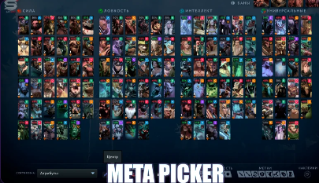
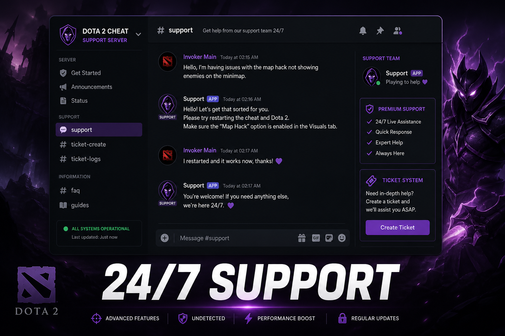

Stop copying pro builds in pub queue
Your pos 4 is not Cr1t. Your offlane is not ATF. The replay parser does not care that a build worked in a tournament game you will never play.

Pro builds assume pro teammates
I bought Vanguard on Timbersaw at minute four because a pro did it with a coordinated trilane and perfect lane setup. I had a Pudge missing hooks and eating my creeps. Same item. Different game. Bad result.
DreamLeague VODs are entertainment. Your bracket is a different sport with the same models.
Build for chaos
Pub DOTA has chaos built in: four cores, no mic, someone randomed Huskar. You need items that work when nobody shows up to your lane and the enemy mid is six-and-zero at ten minutes.
- Prefer early utility that stabilizes lanes over greedy Aghs timings you finish at 38 minutes while high ground is already gone.
- Check OpenDota for your medal, not Immortal win rates.
- If your pos 4 never pulls, buy your own sustain instead of flaming in all-chat.

Play your bracket
Copying ATF is how you buy the wrong item with the wrong gold timing into the wrong teammates. Play your bracket. Not theirs. Then look at demo overlays if you want clearer reads on inventories before you commit.